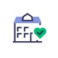

MEDITECH Post Acute
Care doesn’t just happen in one place. Support greater flexibility and lifelong healing with Expanse.
The pandemic has challenged all of us in healthcare to quickly meet the needs of our communities, far beyond traditional settings. Expanded care solutions offer a path to greater flexibility, convenience, and above all, a more connected and holistic approach to caring for patients.
Whether you are supporting a patient’s recovery following hospitalization, regular therapy visits, or chronic disease management in the home, Expanse will help you to stay connected to patients and facilitate lifelong healing wherever they may be.

Easy access to care that heals the mind, body, and spirit
Employers predict that mental health and chronic disease needs will increase as employees face the long-term effects of the coronavirus pandemic in 2022.*
Hear Sanaz Riahi, RN, PhD, Vice President, Practice, Academics and Chief Nursing Executive at Ontario Shores Centre for Mental Health Sciences discuss how her organization supported the mental health of patients and frontline caregivers throughout the pandemic, as well as the emergence of mental health apps.
Achieve measurable and improved community outcomes
MEDITECH’s EHR Excellence Toolkits span across care settings, so you can address your top healthcare priorities.

Hear from Dr. Sarah Porter, Senior Medical Director of Family Practice at Southern Ohio Medical Center, as she discusses the stigma associated with addiction in the CHIME Opioid Action Center podcast.
After implementing MEDITECH's Depression Screening and Suicide Prevention Toolkit, Coffeyville Regional Medical Center detected five at-risk patients in the first month and improved their Merit-based Incentive Payment System (MIPS) score for the CMS2 measure, increasing from 20 percent to 67 percent attestation.
Meet patients where they are
Expand the power of your virtual care offerings, by creating new avenues to care access that include more personalized tools and extended services in a variety of settings.
“For the nurse to facilitate a visit with the patients at home was just genius and really helpful. It was so helpful to know that the patients felt like they were continuing to get cared for, even in this very strict lockdown where they couldn't see their family anymore. They couldn't do those kinds of things, but they were able to see us and be able to continue to get care that way.”
Dr. Louis Harris, CMIO, Citizens Memorial Healthcare
Facilitate coordinated post-acute care transitions
Empower case managers to work with patients and/or their families to review post-acute options and match patients with the appropriate transitional care services for better patient outcomes.
MEDITECH’s integrated Community Care Transition Portal improves the coordination of transitional case management activities without case managers having to navigate multiple screens or third-party systems.
Deliver personalized care when it really matters
The demand for care outside the acute setting is expected to grow in the coming decades as the world’s population ages at a rapid rate*, and as people wish to remain in their homes as long as possible despite changes in health. Our Home Health solution gives patients a compassionate, personalized experience in accordance with their wishes.
Some of the most challenging and intimate moments in a patient’s life often occur during hospice care. MEDITECH’s integrated Hospice solution enables care teams to document what matters most to the patient and their family, as well as facilitates getting the right resources and support to address their complex physical and emotional needs.
Think outside the box of traditional healthcare delivery
Rehabilitation services help people become as independent as possible in their everyday activities. Whether a patient is recovering from surgery, an accident, or addressing underlying conditions, the broad range of rehab services aim to restore quality of life.
“Traditional health care delivery solutions don’t necessarily fit the rehabilitation setting, which is why we’re always looking at ways to get the most out of our technology. When you have a system that enables you to be nimble, you can improve the quality of care for your patients as well as the degree of satisfaction for your clinicians. We’ll keep innovating because our patients work hard to achieve the highest level of recovery so they can re-enter their lives.”
Carroll Castro, MSN, RN, CRRN, WCC, Nursing Informaticist Lead, Brooks Rehabilitation Hospital
Support innovative care delivery models
Consider the possibility of improving outcomes, reducing health care costs, and enhancing the patient experience by providing some acute-level care services at home.
The MEDITECH registration, ordering, and clinical applications are set up to handle patients admitted to special locations and beds to account for those patients being treated at home.

By leveraging MEDITECH’s integrated remote monitoring and virtual visit functionality, care teams can monitor and stay connected to patients in their homes.
Ordering and documentation for patients use standard routines.
Billing is handled according to the normal Inpatient Prospective Payment System (IPPS).
MEDITECH Expanse meets the needs of healthcare organizations providing acute hospital care at home services.
Navigate the next level of continuing care
Our single, integrated EHR provides the clinical, administrative, and financial tools to manage the complex needs of patients and residents across different environments, including long term care, long term acute care, and skilled nursing facilities.
Flexible Care Plans
Support for MDS Requirements
Leave of Absence Functionality
Split and Consolidated Billing
Medicare/Medicaid Bed Certification
Resident Financials and Allowances
See for yourself how healthcare organizations are using Expanse, so they can deliver the best care humanly possible.